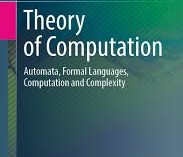

Course Description
This course explores automata, formal languages, pushdown automata, Turing machines, and undecidability concepts in computation.
Instructor Details
Course Instructor: Rakesh Sharma
Educational Qualifications: PhD from IIT Madras, M.Tech from IIT Kanpur. Journals Published: 14 international, 9 national.
Course Curriculum
- Course Objectives
- Understand abstract models of computation.
- Analyze formal language classes and grammar systems.
- Course Outcomes
- Design finite automata and context-free models.
- Classify decidable and undecidable problems.
- UNIT-I: Finite Automata
- DFA/NFA, conversions, and language acceptance.
- UNIT-II: Regular Languages
- Regular expressions, pumping lemma, closure properties.
- UNIT-III: Context Free Languages
- CFG simplification, parse trees, CNF/GNF.
- UNIT-IV: Pushdown Automata
- PDA construction and context-sensitive language basics.
- UNIT-V: Turing Machines
- TM models, reductions, and undecidability.